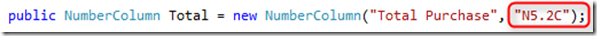
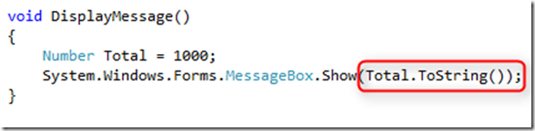
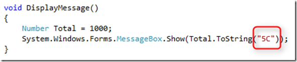
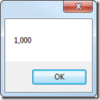

Formatting
Formatting is a comfortable way to display a value on the form. For example, a telephone number might be stored in the form 8002583826, which is not user-friendly as we would like it to be displayed as 800-258-3826. The solution is to format the value to be more user-friendly and in this article we will cover several types of formatting.
- Column format
- Control format
- ToString() method
- List of format types
Column format
When declaring a local or database column we can specify its format (second parameter)

Let’s break the formatting:
N – Total can display negative number
5.2 – Number of digits before and after the decimal point
C – Thousand comma delimiter
So in the example above, if Total=12000, when displaying Total column on the form, the mask of the total will 12,000.00
Control Format
You can specify a format type for the controls on the form. In case the column already has a format type, the format type of the control overwrites it,


ToString() method
One of the most common methods in .NET is ToString(). This method converts any object to its string representation so that it is suitable for display. For example, a message box can display only string values so in order to display a number, we use the ToString() method to convert it to string as below:

Result:

In the FireFly application we override the ToString() method and add a format type parameter.

Explanation:
5 – The Number will be converted to a string with 5 characters and C means
C – The number will be displayed with thousand comma delimiter
The result will be:

List of format types
Numeric types
| Format | Description |
|---|---|
| N | N – Numeric. The number can display negative values (N5) |
| P | P – Pad. If the mask of the number is 5P0 and the user types just one digit, it will be padded with the number following P. (Ex – specifying the number 6 will become 00006.) |
| Z | Z – Zero. In case there is no value in the field, it will be displayed with the character following Z.(Ex – if the field mask is 5Z# and the field is empty, the field will display #####) |
| L | L - Lef. The number will be displayed from left to right (Default is right to left) (5L) |
| A | A – Auto. Once the user fills all the possible digits of the numeric field, the cursor moves automatically to the next field. (Ex – A5 mask moves to the next field after typing 5 digits) |
Text types
| Format | Description |
|---|---|
| U | U – Upper. All the characters typed in the field will be in upper case |
| L | L – Lower. All the characters typed in the field will be in lower case |
| # | This is a place holder for numbers and symbols. Good example is a phone number. 8002583826 will be displayed 800-258-3826 with a format ###-####-#### |
| A | A – Auto. Once the user fills all the possible characters of the text field, the cursor moves automatically to the next field. (Ex – A5 mask moves to the next field after typing 5 chars) |
Date and Time
| Format | Description |
|---|---|
| DD/MM/YYYY | Date will be displayed as day/month/year. You can specify the format in several ways: MM/DD/YYYYY or YYYY/DD/MM |
| ##/##/## | Will be display either DD/MM/YY or MM/DD/YY or YY/MM/DD. |
| HH:MM:SS | HH – Hours MM – Minutes SS– Seconds |
| PM | AM/PM using this option will limit HH to 12 |
Help us improve, Edit this page on GitHub
or email us at info@fireflymigration.com